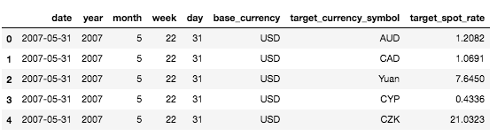
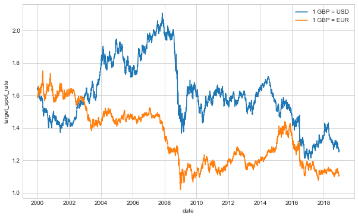
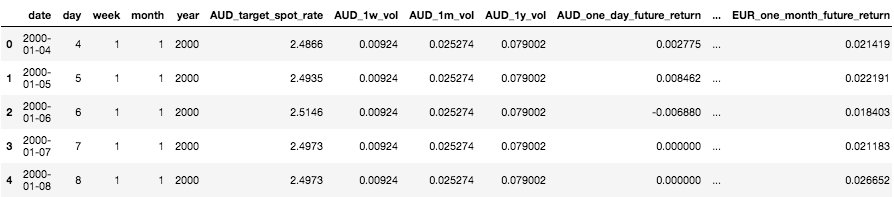
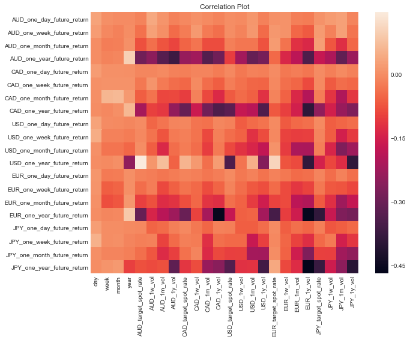
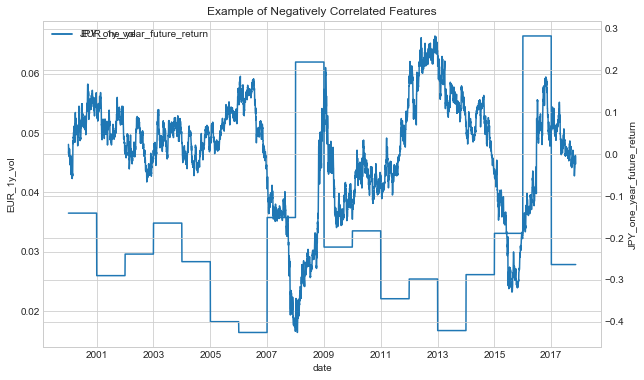
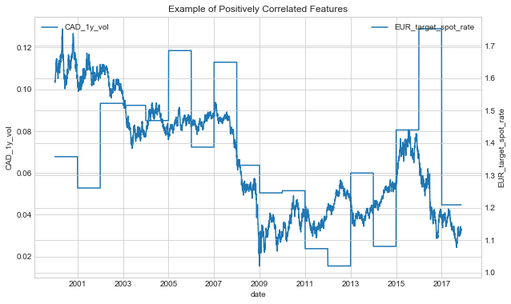

@requires_authorization
def somefunc(param1='', param2=0):
r'''A docstring'''
if param1 > param2:
print 'Gre\'ater'
return (param2 - param1 + 1 + 0b10l) or None
class SomeClass:
pass
>>> message = '''interpreter
... prompt'''
I have had the idea of the topic of my first post for a considerable time, having some ideas
of how I would approach the problem but never sitting down to and writing them out.
The Idea
I was interested in looking into the methods of arbitrage that currency traders
can follow to generating the large sums of money they do. I hypothosised that there are some
relation or pattern between the rates of currencies in foriegn markets, which hopefully I could
discover and explain by using some ML techniques.
Getting the Data
I decided the best datasets to use would be some historical spot rates between a large variety
of currencies spanning economies of varying types and development stages. This was surpringly
not as straightforward as I initially expected, with the type and scale of data not available
to download very easily.
I decided I would collect the information myself, using a simple scraping script on a reliable
source of information. I found that this section of the Bank of England
hosted the information I needed in well structured table.
After requesting data from different days and currencies, I discovered the URLs for the different pages
followed a convenient pattern. This would make generating the URLs for all of the pages I need
to scrape very easy to generate.
I had recently started to use Scrapy as a crawling and scraping framework, and I was extremely
pleased with the ease of setup and the native parallelisation it supports. With a list of pre-generated
URLs to scrape, this would make the data collection process a breeze.
So I opened up a new project folder and initialised a new Scrapy project with
> mkdir currency_analysis && cd currency_analysis
> virtualenv venv
> source venv/bin/activate
> pip install scrapy
> scrapy init currency_analysis
I then write a class method to generate all of the URLs I want to scrape.
@staticmethod
def build_start_urls():
start_date = date(2000, 1, 1)
end_date = date(2018, 12, 21)
delta = end_date - start_date
currencies = ['GBP', 'USD', 'EUR']
urls = set()
for currency in currencies:
for i in range(delta.days + 1):
this_date = end_date - timedelta(i)
weekno = this_date.weekday()
if weekno < 5: # if weekday
day = this_date.day
month = this_date.strftime("%b")
year = this_date.year
url = f'https://www.bankofengland.co.uk/boeapps/database/Rates.asp?TD={day}&TM={month}&TY={year}&into={currency}&rateview=D'
urls.add(url)
scraped_urls = retrieve_scraped_urls()
remaining_urls = urls - scraped_urls
print(f'{len(scraped_urls)} scraped urls. {len(urls)} total urls. {len(remaining_urls)} remaining urls.')
return list(remaining_urls)
I then scrape these pages, respecting all robots.txt, extract the infromation needed from the table and after making use of the Item Pipelines mechanism within Scrapy, yield the results into a local Postgres server.
def parse(self, response):
for el in response.xpath('//*[@id="editorial"]/table/tr'):
day, month, year, base_currency = self.parse_url(response.url)
target_currency = el.xpath('td/a/text()').extract_first()
row_data = el.xpath('td/text()').extract()
try:
target_spot_rate = row_data[0].strip()
except:
target_spot_rate = None
try:
target_52wk_high = row_data[1].strip()
except:
target_52wk_high = None
try:
target_52wk_low = row_data[2].strip()
except:
target_52wk_low = None
yield CurrencyScraperItem(
url=response.url,
day=day,
month=month,
year=year,
base_currency=base_currency,
target_currency=target_currency,
base_value=1,
target_spot_rate=target_spot_rate,
target_52wk_high=target_52wk_high,
target_52wk_low=target_52wk_low
)
EDA
I begin an exploration phase by pulling in the data into a Jupyter notebook using SqlAlchemy, and performing a few peices of initial treatment. I notice dates are formatted as string and fix this with
# date manipulation
df['date'] = df.apply(lambda x: datetime.date(x['year'], x['month'], x['day']), axis=1)
df['date'] = pd.to_datetime(df['date'])
df['week'] = df['date'].dt.week
I rename certain values and replace with the ISO names of the currencies for cleaner visualiations with
currency_dict = {'Japanese Yen': 'JPY','Malaysian ringgit': 'MYR','New Zealand Dollar': 'NZD','Norwegian Krone': 'NOK','Polish Zloty': 'PLN','Russian Ruble': 'RUB','Saudi Riyal': 'SAR','Singapore Dollar': 'SGD','South African Rand': 'ZAR','South Korean Won': 'KRW','Swedish Krona': 'SEK','Swiss Franc': 'CHF','Taiwan Dollar': 'TWD','Thai Baht': 'THB','Turkish Lira': 'TRY','US Dollar': 'USD','Australian Dollar': 'AUD','Canadian Dollar': 'CAD','Chinese Yuan': 'Yuan','Cyprus Pound': 'CYP','Czech Koruna': 'CZK','Danish Krone': 'DKK','Estonian Kroon': 'EEK','Euro': 'EUR','Hong Kong Dollar': 'HKD','Hungarian Forint': 'HUF','Indian Rupee': 'INR','Israeli Shekel': 'ILS','Latvian Lats': 'LVL','Lithuanian Litas': 'LTL','Maltese Lira': 'MTL','Slovak Koruna': 'SKK','Slovenian Tolar': 'SIT','Sterling': 'GBP','Swedish Krona ': 'SEK','Brazilian Real': 'BRL','Austrian Schilling': 'ATS','Belgian Franc': 'BEF','Deutschemark': 'DEM','Finnish Markka': 'FIM','French Franc': 'FRF','Greek Drachma': 'GRD','Irish Punt': 'IEP','Italian Lire': 'ITL','Netherlands Guilder': 'NLG','Portuguese Escudo': 'PTE','Spanish Peseta': 'ESP'}
df['target_currency'].replace('Latvian Lats\r\nCurrency joined the Euro on 01/01/2014', 'Latvian Lats', inplace=True)
df['target_currency_symbol'] = df['target_currency'].apply(lambda x: currency_dict[x])
df.drop(columns=['target_currency'], inplace=True)
and finally drop unnecessary columns and reorder remaining columns, and I am left with clean dataframe to start some analysis.

You can read the dataframe by taking the first row and saying that on 31st of May 2007, you could purchase 1.2082 Australian Dollars with 1 US Dollar at the end of the market day (terminolgy??).
As a sanity check, I plot a some historical exchange rate data and cross check the data displayed in the Notebook with XE.com, a service provider that shows exchange rates. Reassuringly, I find the data that I have collected matches data found elsewhere.

My next step was to try to find out if I could identify some trends in the data that I would be able to utilise in building a predictive model. With the information I have collected, I derive two additional types of data that explains different market phenomenoms; the relative price changes of a currency, sometimes called a return, and the volatility of price changes of a currency, called the volatility.
To calculate returns, I needed to calculate the percentage difference of spot rates of a given currency, looking over a daily, weekly, monthly, and a yearly period. Due to the lack of price data on certain non trading-days such as weekends and bank holidays, I resampled the data to carry over the price of a currency from the previous existing date - this approach is one of several that can be taken.
I implemented this using Pandas resampling method over the different length periods I wanted returns over, demonstrated like this
# add in data for missing dates
currency_df = currency_df.sort_values(['date'])
currency_df.set_index('date',inplace=True)
currency_df = currency_df.resample('D', axis=0).pad()
currency_df = currency_df.reset_index()
# find shifts in period dates
currency_df['date_last_day'] = currency_df['date'] - pd.to_timedelta(1, 'D')
currency_df['date_last_week'] = currency_df['date'] - pd.to_timedelta(1, 'W')
currency_df['date_last_month'] = currency_df['date'] - pd.to_timedelta(1, 'M')
currency_df['date_last_year'] = currency_df['date'] - pd.to_timedelta(1, 'Y')
currency_df['date_last_day'] = currency_df['date_last_day'].dt.floor(freq='D')
currency_df['date_last_week'] = currency_df['date_last_week'].dt.floor(freq='D')
currency_df['date_last_month'] = currency_df['date_last_month'].dt.floor(freq='D')
currency_df['date_last_year'] = currency_df['date_last_year'].dt.floor(freq='D')
# extract the price on the shifted dates
rename_dict = {
'date_x': 'date',
'date_last_day_x': 'date_last_day',
'date_last_week_x': 'date_last_week',
'date_last_month_x': 'date_last_month',
'date_last_year_x': 'date_last_year',
'target_spot_rate_x': 'target_spot_rate'
}
currency_df = currency_df.merge(currency_df[['date_last_day','target_spot_rate']], left_on='date', right_on='date_last_day')
currency_df.drop(columns='date_last_day_y', inplace=True)
rename_dict['target_spot_rate_y'] = 'one_day_future_price'
currency_df = currency_df.rename(rename_dict, axis=1)
currency_df = currency_df.merge(currency_df[['date_last_week','target_spot_rate']], left_on='date', right_on='date_last_week')
currency_df.drop(columns='date_last_week_y', inplace=True)
rename_dict['target_spot_rate_y'] = 'one_week_future_price'
currency_df = currency_df.rename(rename_dict, axis=1)
currency_df = currency_df.merge(currency_df[['date_last_month','target_spot_rate']], left_on='date', right_on='date_last_month')
currency_df.drop(columns='date_last_month_y', inplace=True)
rename_dict['target_spot_rate_y'] = 'one_month_future_price'
currency_df = currency_df.rename(rename_dict, axis=1)
currency_df = currency_df.merge(currency_df[['date_last_year','target_spot_rate']], left_on='date', right_on='date_last_year')
currency_df.drop(columns='date_last_year_y', inplace=True)
rename_dict['target_spot_rate_y'] = 'one_year_future_price'
currency_df = currency_df.rename(rename_dict, axis=1)
# caluclate returns based on shifted prices
currency_df['one_day_future_return'] = (currency_df['one_day_future_price'] - currency_df['target_spot_rate'])/currency_df['target_spot_rate']
currency_df['one_week_future_return'] = (currency_df['one_week_future_price'] - currency_df['target_spot_rate'])/currency_df['target_spot_rate']
currency_df['one_month_future_return'] = (currency_df['one_month_future_price'] - currency_df['target_spot_rate'])/currency_df['target_spot_rate']
currency_df['one_year_future_return'] = (currency_df['one_year_future_price'] - currency_df['target_spot_rate'])/currency_df['target_spot_rate']
currency_df.drop(columns=['one_day_future_price', 'one_week_future_price', 'one_month_future_price', 'one_year_future_price'], inplace=True)
currency_df.drop(columns=['date_last_day', 'date_last_week', 'date_last_month', 'date_last_year'], inplace=True)
return currency_df
What's important to notice here is that the resulting dataframe will give us, say the spot rate on any given day, as well as the percentage increase of price based on a future price. I.e. If on the 1st April 2000 I can buy 2.466 Australian Dollars with 1 GBP, the weekly return column
shows us that in one months time, on 1st May 2000, the price will be 0.4% higher. This feature will allow us to use current data such spot rates and volatility to determine future price.
To derive price volatility, I took a simpler approach. All I needed to was group by price and the period over which I wanted to analyse and calcualted the standard deviation in the target spot rates. In future analysis, this will change to
grouping by the previous n-days rather than my current method.
week_vol = currency_df.groupby(['week', 'month', 'year', 'target_currency_symbol'])['target_spot_rate'].std()
week_vol = week_vol.reset_index().rename({'target_spot_rate': '1w_vol'}, axis=1)
month_vol = currency_df.groupby(['month', 'year', 'target_currency_symbol'])['target_spot_rate'].std()
month_vol = month_vol.reset_index().rename({'target_spot_rate': '1m_vol'}, axis=1)
year_vol = currency_df.groupby(['year', 'target_currency_symbol'])['target_spot_rate'].std()
year_vol = year_vol.reset_index().rename({'target_spot_rate': '1y_vol'}, axis=1)
currency_df = currency_df.merge(week_vol, how='left', on=['week', 'month', 'year', 'target_currency_symbol'])
currency_df = currency_df.merge(month_vol, how='left', on=['month', 'year', 'target_currency_symbol'])
currency_df = currency_df.merge(year_vol, how='left', on=['year', 'target_currency_symbol'])
I then reshape the data so that each row represents a particular date and I can use prices and price volatilties of all currencies to predict returns in all currencies. The resulting dataframe looks like this

To quickly identify any interesting trends, I plot a correlation matrix of data, to determine if there are any linear relationships between returns and prices/volatilies.

Any particular dark or light patches in this plot would indicate a trend between the two variables. For example the one year return on GBP to Japanese Yen is correlated with the annual volatility betwen the GBP and the Euro.
This is confirmed by plotting these two negatively correlated variables.

And an example of some partially positively correlated data is

Note: It's clear that the lack of a more sophisticated approach to calculating volatility may be affecting the results, however I carried on with the intent to fix this later.